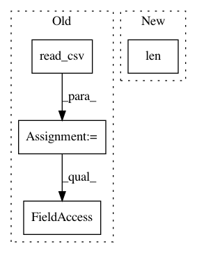

2ab8c1444facbd46df8767a5badda5b9f1a50c29,tpot/tpot.py,,main,#,741
Before Change
print("{}\t=\t{}".format(arg, args.__dict__[arg]))
print("")
input_data = pd.read_csv(args.INPUT_FILE, sep=args.INPUT_SEPARATOR)
if "Class" in input_data.columns.values:
input_data.rename(columns={"Class": "class"}, inplace=True)
training_indices, testing_indices = train_test_split(input_data.index,
stratify=input_data["class"].values,
train_size=0.75,
test_size=0.25,
random_state=args.RANDOM_STATE)
training_features = input_data.loc[training_indices].drop("class", axis=1).values
training_classes = input_data.loc[training_indices, "class"].values
testing_features = input_data.loc[testing_indices].drop("class", axis=1).values
testing_classes = input_data.loc[testing_indices, "class"].values
tpot = TPOT(generations=args.GENERATIONS, population_size=args.POPULATION_SIZE,
mutation_rate=args.MUTATION_RATE, crossover_rate=args.CROSSOVER_RATE,
random_state=args.RANDOM_STATE, verbosity=args.VERBOSITY,
After Change
print("")
input_data = np.recfromcsv("PATH/TO/DATA/FILE", sep="COLUMN_SEPARATOR")
features = input_data.view((np.float64, len(input_data.dtype.names)))
np.delete(features, input_data.dtype.names.index("class"))
training_features, testing_features, training_classes, testing_classes = \
In pattern: SUPERPATTERN
Frequency: 3
Non-data size: 4
Instances
Project Name: EpistasisLab/tpot
Commit Name: 2ab8c1444facbd46df8767a5badda5b9f1a50c29
Time: 2016-08-01
Author: supacoofoo@gmail.com
File Name: tpot/tpot.py
Class Name:
Method Name: main
Project Name: jsalt18-sentence-repl/jiant
Commit Name: 11c784d16cb80d46e396ce12069ab9d7d477b256
Time: 2020-09-28
Author: 57466294+jeswan@users.noreply.github.com
File Name: jiant/tasks/lib/scitail.py
Class Name: SciTailTask
Method Name: _create_examples
Project Name: scikit-multiflow/scikit-multiflow
Commit Name: c8489f3ad8abe0dc09c628fd99ec5f83b89e20aa
Time: 2017-06-07
Author: guilhermekmatsumoto@gmail.com
File Name: skmultiflow/data/CsvFileStream.py
Class Name: CsvFileStream
Method Name: restart